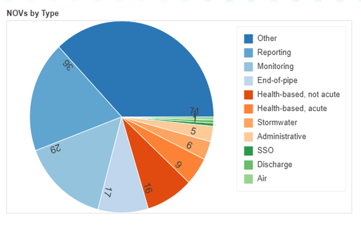

Portfolio and Case Studies
Practical solutions for everything water.
Anomaly Detection in Source Water
See how a large utility utilized a contamination early warning model as part of a comprehensive Source Water Protection program.


Water Quality Compliance Sampling
Think most NOVs come from an MCL violation? Think again. The biggest challenge for Water Quality professionals is
sometimes just knowing when to sample.
Fortunately, Aaron built a full-stack app that monitors
compliance sampling from requirements through results.
Non-Revenue Water
A large water utility needed help estimating water loss from various sources. See how Aaron analyzed meter and billing data as part of a transition to Advanced Metering Infrastructure (AMI).


Flooding and CSO Prediction
A startup needed a model to estimate pipe surcharging in stormwater and combined systems. Aaron's model provided at least six hours advance notice of flooding and Combined Sewer Overflows.


Drinking Water Treatment Optimization
See how Aaron helped a drinking water treatment plant optimize its treatment processes and reduce chemical costs.
Identification of Malfunctioning Meters
A large water utility needed help finding "sticking" meters, a potential revenue and customer service problem. See how Aaron implemented an effective sampling plan and used data to estimate which meters were sticking.